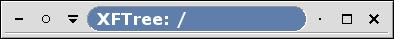

XFwm is the window manager that comes with XFce. It is fully integrated into the environment, providing a homogeneous interface with all XFce applications. Moreover, XFwm is able to handle the most common window hints shared by popular applications such as Motif, SUN Openwindows, KDE and GNOME applications.
Most user options are handled through XFce setup and do not require any script customization. However, if you want access to the full power of xfwm configuration you can read all about it in Part II. Advanced XFwm configuration.
Without any specific customization XFwm provides several builtin menus and functions.
The main menu can be obtained by clicking on the root window with the left mouse button or by pressing [Alt+F2]. This menu provides an access to the most common operations.
The window menu can be obtained by clicking on the root window with the middle mouse button (or both left and right button, if you have only 2 mouse buttons) or by pressing [Alt+F1]. This provides access to functions acting on windows.
The window list is obtained by clicking on the root window with the right mouse button. It shows all running applications.
A number of default keyboard shortcuts and mouse bindings for xfwm are defined. These can only be altered through editing the configuration file (see Part II).
Table 4-1. XFwm default keyboard shortcuts
| Key | Action |
|---|---|
| Alt-Tab | Switch application (Next window) |
| Alt-Tab | Switch application (Previous window) |
| Alt-Tab | Switch application (Previous window) |
| Shift-Alt-arrow | Move pointer (fast) |
| Shift-Ctrl-arrow | Move pointer (slow) |
| Alt-F1 | Open window menu |
| Alt-F2 | Open main menu |
| Alt-F3 | Lower window |
| Alt-F4 | Close window |
| Alt-F5 | Next window |
| Alt-F7 | Move window |
| Alt-F8 | Resize window |
| Alt-F9 | Iconfify window |
| Alt-F10 | Maximize window |
| Ctrl-F1 to F10 | Switch to desktop 1 to 10 |

Figure 4-1. Title bar buttons
By default xfwm has 6 buttons on the title bar; three on the left and three on the right. They are numbered from outside to inside, alternating left and right. This means button 1 is the first from the left, button 2 the first from the right, button 3 the second from the left, etc.
Table 4-2. XFwm default mouse bindings
| Mouse button | Click | Context | Action |
|---|---|---|---|
| Left or Right | Single | Button 1 | Open window operations menu |
| Left or Right | Double | Button 1 | Close window |
| Left or Right | Single | Button 3 | (Un)Stick window |
| Left or Right | Single | Button 5 | (UnShade) window |
| Left or Right | Single | Button 6 | Iconify window |
| Left or Right | Single | Button 4 | (Un)Maximize window |
| Left or Right | Single | Button 2 | Close window |
| Left or Right | Single+Shift key | Button 2 | Destroy window |
| Left | Single | Title bar | Raise/move window |
| Right | Single | Title bar | (Un)Shade window |
| Middle | Single | Title bar | Raise/Lower window |
| Left | Double | Title bar | (Un)Maximize window |
| Left | Single | Root window | Open main menu |
| Middle | Single | Root window | Open window operations menu |
| Right | Single | Root window | Display list of running applications |
| Middle | Single | Window border | Move window |
| Right | Single + Shift key | Window border | Move window |